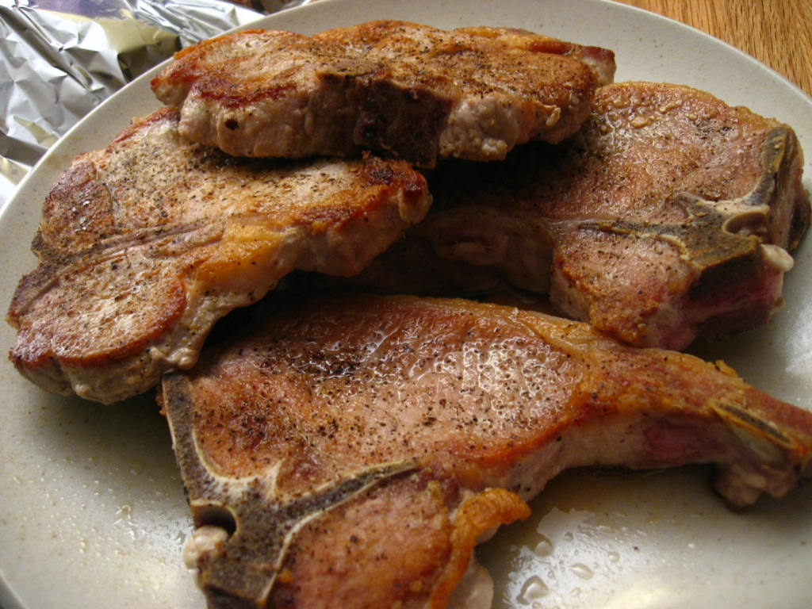

Pork Chops
If you would like to get back to the home page, click here.

Recipe from https://www.delish.com/cooking/recipe-ideas/a58720/oven-baked-pork-chops-recipe/
Description
If overcooked, they can be dry, bland, and just plan boring.
But, cooked correctly, pork chops can be flavorful, and oh so tender.
Baking your pork chops will give them a perfectly cooked interior with a crisp, delicious crust.
There might be no better example of that than in this oven-baked, rosemary and garlic recipe.
Ingredients
- Four (4) pork loin chops
- Kosher salt
- Freshly ground black pepper
- One (1) tablespoon freshly minced rosemary
- Two (2) cloves garlic, minced
- Half cup butter, melted
- One (1) tablespoon extra-virgin olive oil
Step-by-Step Instructions
- Preheat oven to 375°F (190°C). Season pork chops generously with salt and pepper.
- In a small bowl mix together butter, rosemary, and garlic. Set aside.
- In an oven safe skillet over medium-high heat, heat olive oil then add pork chops. Sear until golden, 4 minutes, flip and cook 4 minutes more. Brush pork chops generously with garlic butter.
- Place skillet in oven and cook until cooked through (145°F for medium), 10-12 minutes. Serve with more garlic butter.